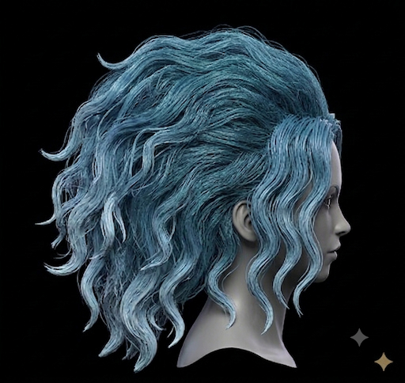
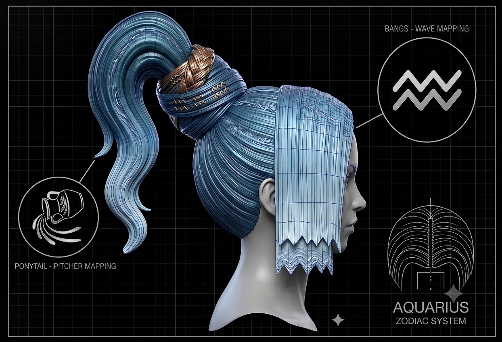

01. Style Motion (360° View)
02. Stylist Spec Sheet
Style Classification
Wave & Pitcher Hybrid
Zodiac Symbolism
♒ Aquarius
Bangs Mapping
Zigzag Water Waves
Ponytail Mapping
Pouring Pitcher Flow
Natural Texture
Full Wild Waves
Primary Tone
Oceanic Cyan / Bronze
03. Hair Preparation & Final Mapping
BEFORE (Natural Waves)

AFTER (Zodiac Blueprint)

04. Style Stat Card // The Aquarius Crown
Position: High-Sculpt Architectural Updo
Element: Air / Water-Bearer
Rarity: Master Class
| Metric | Rating | Detail / Metaphor |
|---|---|---|
| Execution Difficulty | 9.2 / 10 | Pro Level: High precision, micro-sectioning, and structural anchoring required. |
| Workday Durability | 8.5 / 10 | All-Day Anchor: Internal foam/wire frame keeps ponytail elevated without sagging. |
| Party / Dance Endurance | 7.0 / 10 | High-Impact Warning: 2-tier Aquarius zigzag bangs need zero-touch clearance; wind/sweat disrupts sharp edges. |
| Prep Time | 75–90 min | Pre-Game Routine: Smooth blow-dry, precise geometric cutting, and structural wrapping. |
🛠️ Gear & Equipment (Accessories)
- Internal Base Anchor: 1× High-density ponytail foam base insert or structural wire post
- Tension Binders: 4× Heavy-duty clear elastic hair bands (stacked base tie)
- Concealed Support: 12× Heavy-duty U-shaped hairpins (securing woven cross-wrap)
- Edge Precision Tool: 1× Ultra-fine haircutting shears + micro-tooth rat-tail comb
🧪 Chemical & Product Loadout
- Structural Hold Spray: Heavy Load (Freeze Spray) — High-octane coat to lock 2-tier zigzag bangs flat and rigid.
- Sleekness / Flyaway Control: Medium Load (Edge Control Wax / Pomade) — Applied at scalp and ponytail wrap to eliminate stray hairs.
- Finishing Polish: Light Load (High-Shine Gloss Spray) — Adds a crisp metallic satin sheen across panels.
💡 Stylist Pro Tip: To get the 2-tier Aquarius zigzag bangs completely flat and sharp in real life, hair stylists use flat-iron setting clips on wax-treated hair panels, spray with extreme-freeze hairspray, and let them cure flat before making final angle cuts.